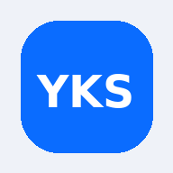

Odak hazır
Odak zamanı
Çalışmaya başlamak için odak ekranını aç.
--:--

Bugünkü odağın net olsun; gerisi sırayla gelir.
Günün sözü hazırlanıyor…
Bugünkü program bilgileri hazırlanıyor.
Çalışmaya başlamak için odak ekranını aç.
Programdaki sıradaki görevin burada görünecek.
Görevler yükleniyor…
Görevler hazırlanıyor…
Ders kayıtları hazırlanıyor…
Odak süreleri mevcut kayıtlardan hesaplanıyor.
Tekrar kayıtları hazırlanıyor…
Konu ve yanlış kayıtları hazırlanıyor…
Eksikler yalnızca son 90 günün yanlışları veya kaydettiğin konu durumu ve güven düzeyine göre gösterilir.
Çalışma verileri hazırlanıyor…
Son oturumlar hazırlanıyor…
Bir güne dokunarak kayıtlarını inceleyebilirsin.
Bu gösterge YKS sınav puanı değildir. Yalnızca kaydedilmiş çalışma ve mevcut hedeflerine dayanır.
Seçimlerin ve yazdıkların yalnızca Kaydet'e basınca kaydedilir. Koç bağlantın varsa raporun koç panelinde de görünür.
Bugünkü odağın net olsun; gerisi sırayla gelir.
YKS'ye kalan
Bugünkü programın hazırlanıyor.
Bugünü detaylı değerlendir. Neler çalıştığını, nerede zorlandığını ve yarın neye odaklanacağını yaz; koç bağlantın açıksa raporun koçuna da görünür.
Buradan girdiğin soru günlük toplamına da eklenir ve konu "soru çözdüm" kademesine geçer.
Görünen haftayı şablon olarak kaydet, sonraki haftalara tek dokunuşla uygula.
Hücreye doğrudan yaz — anında kaydedilir. Dolu bir hücreye uzun bas: Düzenle, Kopyala, Yarına taşı veya Sil. Bugünün sütunu vurgulanır; üstte günlük ve haftalık ilerlemeyi görebilirsin.
Yıldızlar güven puanın (1–5). Bir konuyu 3. kademeye aldığında 3., 7. ve 21. günlerde tekrar listesine düşer. Risk etiketi; yanlış, tekrar, konu durumu, ders deneme performansı ve çalışma verisini birlikte değerlendirir.
Kişisel kayıt
Yanlış yaptığın soruları nedenleriyle kaydet. Programına dokunmaz; sadece hatalarını görünür hale getirir.
Deneme Analiz Merkezi
Sonuçlarını kaydet, ilerlemeni gör.
Toplam net: 0
Kesikli turuncu çizgi hedef netin (Ayarlar'dan girilir).
Elindeki gerçek ÖSYM sonucunu gir; formülü senin sonucuna göre çözeyim.
Yanlış sebepleri (son 60 gün)
Deneme yanlışları
Deneme analizinde eklediğin fotoğraflar; ders, konu, sebep ve notuyla burada kalır.
Serbest arşiv kaydı
Konu yazarsan yanlış defterine de işlenir ve o konunun güven puanı düşer. Fotoğraflar cihazda küçültülerek saklanır.
Oturumu hazırla
Ders, konu ve çıktıyı seç; süre kadar ne ürettiğini de takip et.
Ders
Başlangıç saatini boş bırakırsan eklediğin sürenin şimdi bittiği kabul edilir.
Deneme öncesi ya da tıkandığında iki dakika. Dörtlü ritim: al · tut · ver · tut.
Gerçek sınav süresiyle tam ekran geri sayım.
TYT, AYT ve YDT sürelerinde bölüm bölüm süre takibi yapılır: her bölümün süresi dolunca uyarı verir. Özel sürelerde tek geri sayım çalışır.
Ekranı açık tutma, destekleyen tarayıcılarda çalışır. Sayaç arka planda da doğru ilerler.
Odak sesi
Sesler cihazda üretilir, internet gerekmez.
AYLIK DAĞILIM
Takvim ayına göre ders ders toplam çalışma süren.
Yardımcı araçlar, geçmiş, ayarlar ve veri yönetimi tek merkezde.
Ne kadar yol aldığını, önceki döneme göre hızını ve hedeflere yaklaşımını tek bakışta gör.
Sınav simülasyonu